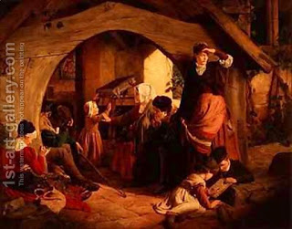

Keritot 19 - Does One Need To Know His Exact Mistake?
Imagine that one had in front of him two pieces of fat, one prohibited as "chelev," which is usually brought on the Altar, and the other one a leftover from a sacrifice, and he ate one, but does not know which one. Does he need to know which of the two specific mistakes he committed, if both obligate him in a sin-offering? A similar situation: his wife and his sister were with him in a house, but unlike the previous case , his wife has not been to the mikva, which makes her prohibited to him under the penalty of being cut off, and he had relations with one of them, thinking that it was permitted, but does not know which. Yet a third case: Yom Kippur was adjacent to Shabbat, and he did some prohibited work at the close of the day, so he does not know if he transgressed Yom Kuppur or Shabbat, for both of which he deserves to be cut off.
In all three cases Rabbi Eliezer holds him liable for a sin-offering, since he for sure transgressed, while Rabbi Yehoshua exempts him, since he does not know the exact nature of his transgression.
Rabbi Yose corrects the third case: it could be that he performed half of the labor on Shabbat and the other half on Yom Kippur, in which case he would not be liable. Rather, he did the work in the middle of the day, but does not know which day it was, and it is here that the argument applies.
Art: James Drummond - Sabbath Evening